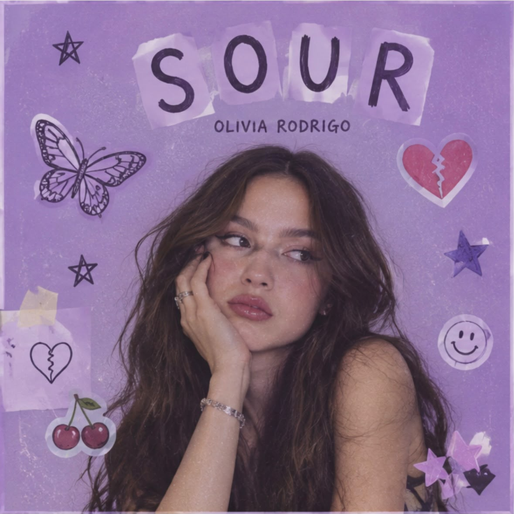
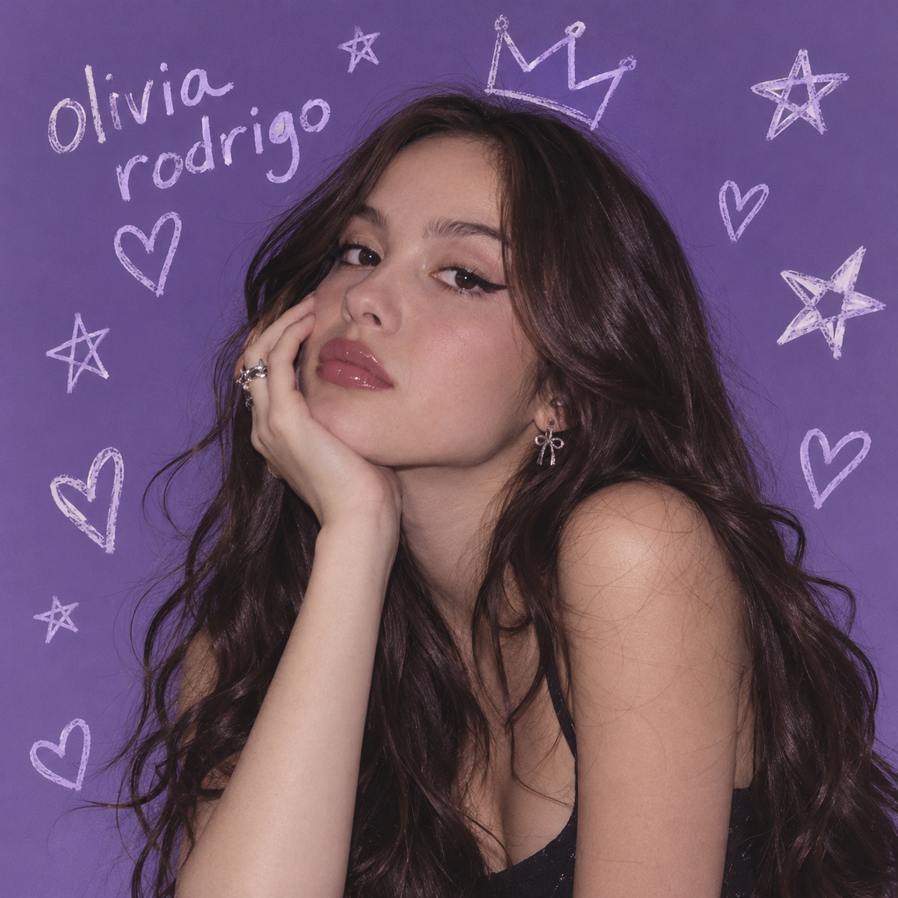
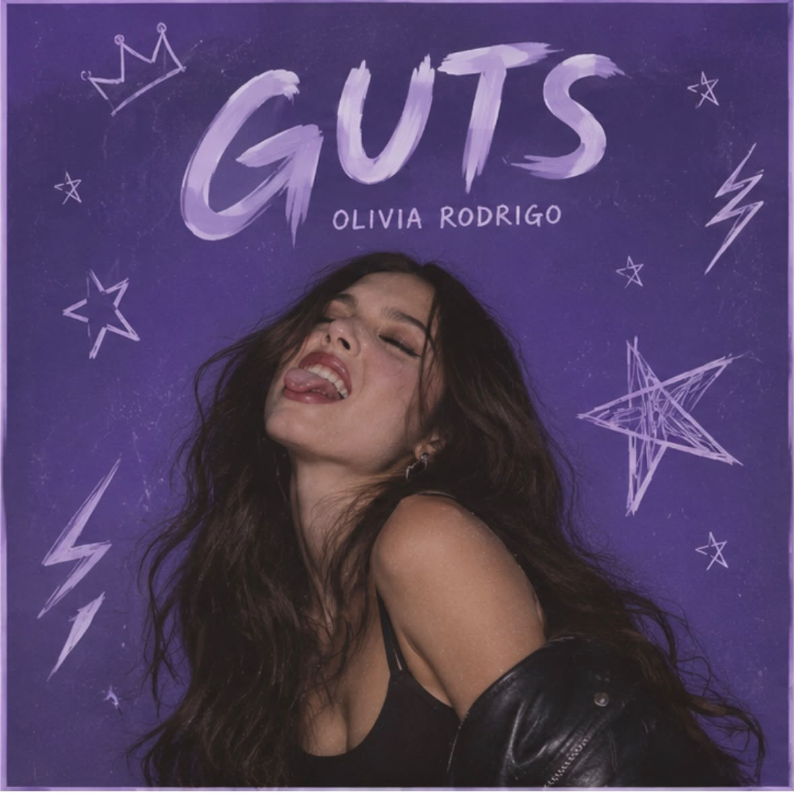
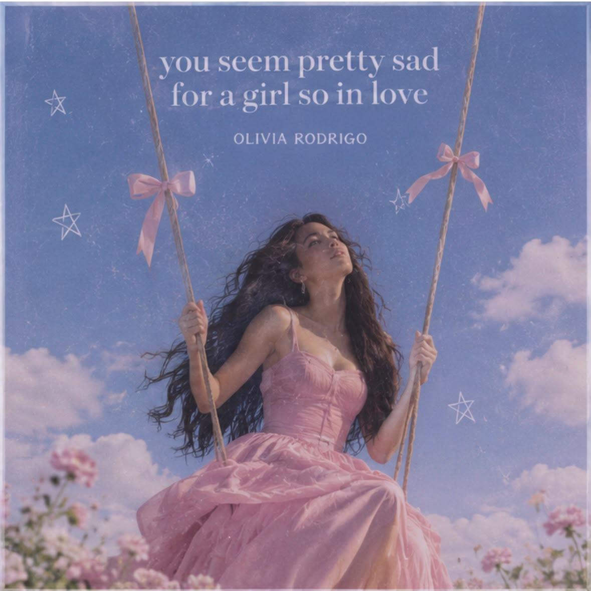

Olivia Rodrigo bukan sekadar nama, melainkan sebuah ruang gema bagi patah hati generasi masa kini. Melalui petikan gitar akustik yang jujur dan balada piano yang rapuh, ia merangkum gejolak emosi Gen Z yang sering kali terpendam di balik layar ponsel. Musiknya memadukan pop-rock era 90-an dengan kejujuran lirik ala diary pribadi, menciptakan melodi yang terasa intim sekaligus megah di telinga para pendengar mudanya.
Bagi Gen Z yang hidup di antara riuhnya ekspektasi dunia digital dan sunyinya kesepian, lagu-lagu Olivia menjelma menjadi pelukan hangat yang memvalidasi setiap air mata dan kemarahan. Ia bernyanyi tentang kerentanan, kecemasan, dan pencarian jati diri tanpa sekat formalitas, menjadikan setiap baitnya bahasa universal bagi mereka yang sedang belajar mencintai diri sendiri di tengah ketidaksempurnaan zaman.
58.4M
Spotify Followers
75M
Monthly Listeners
3
Official full Albums
Discography

GUST (full album)
Listen Now